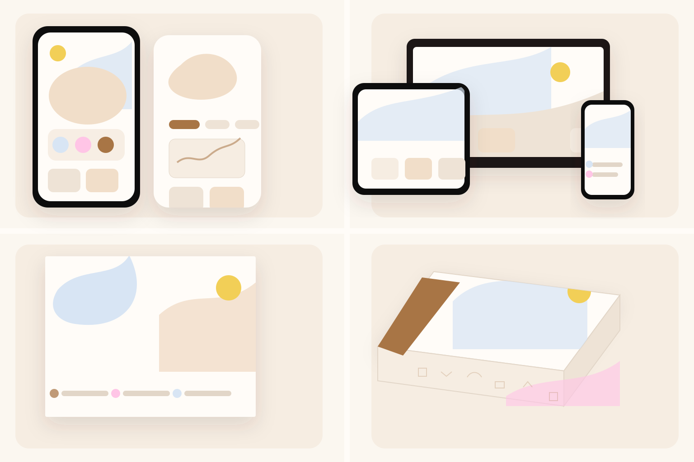
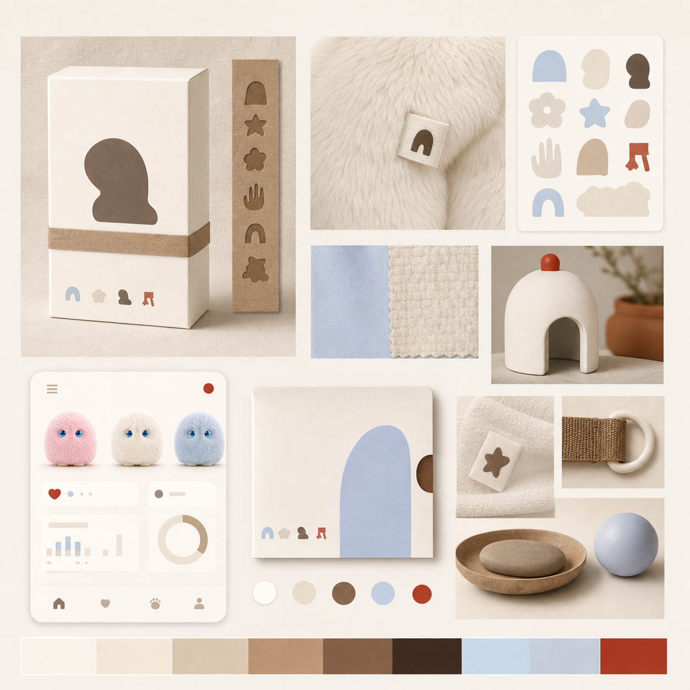
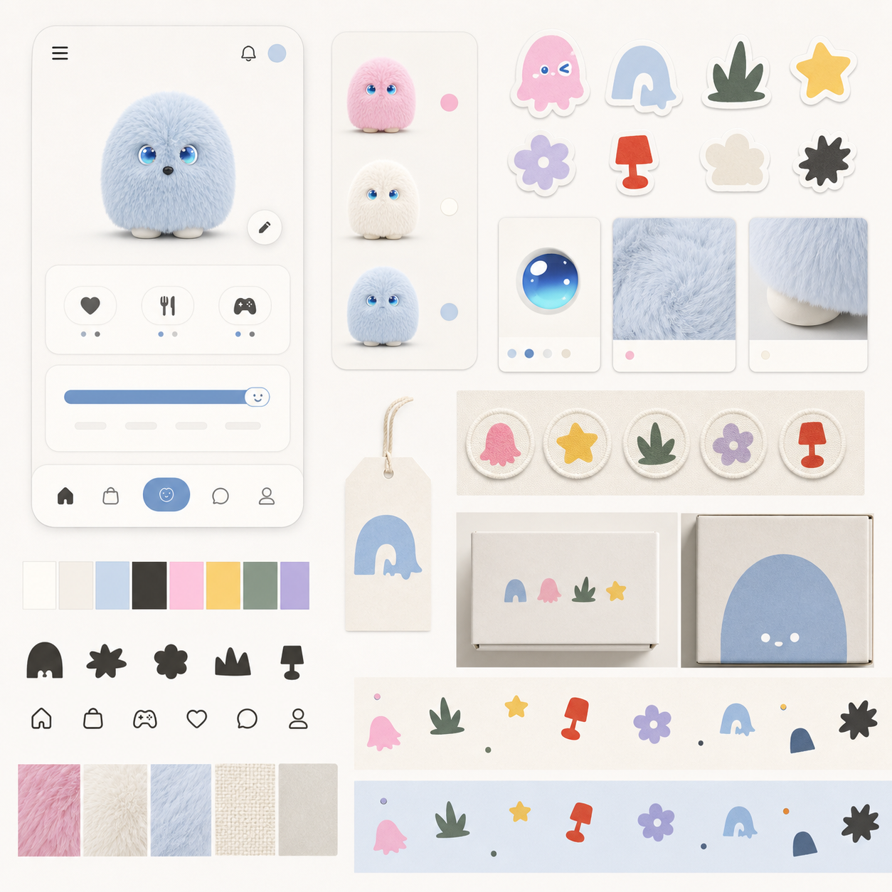
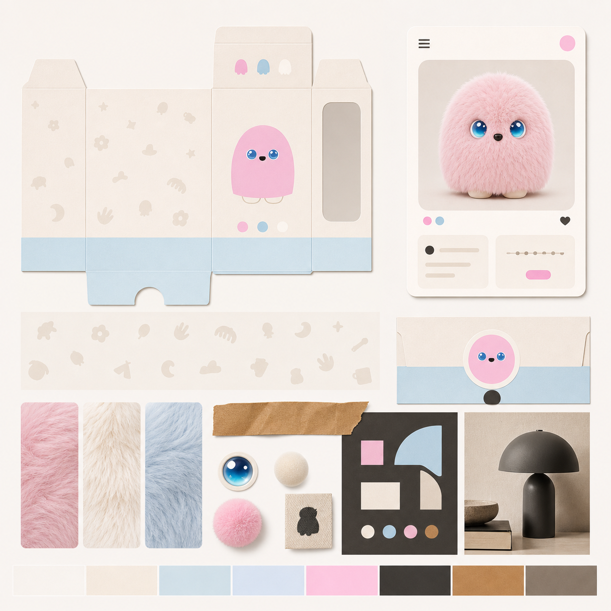
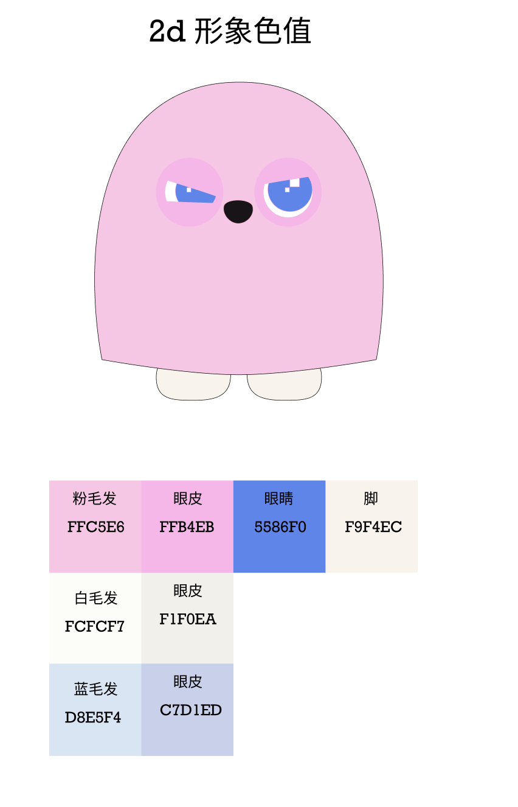
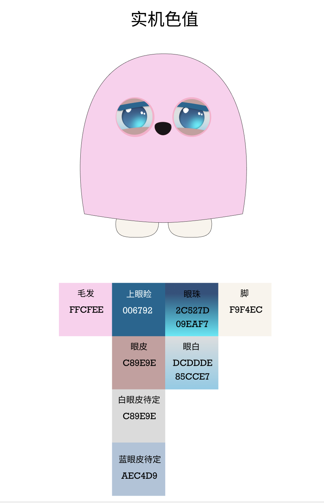
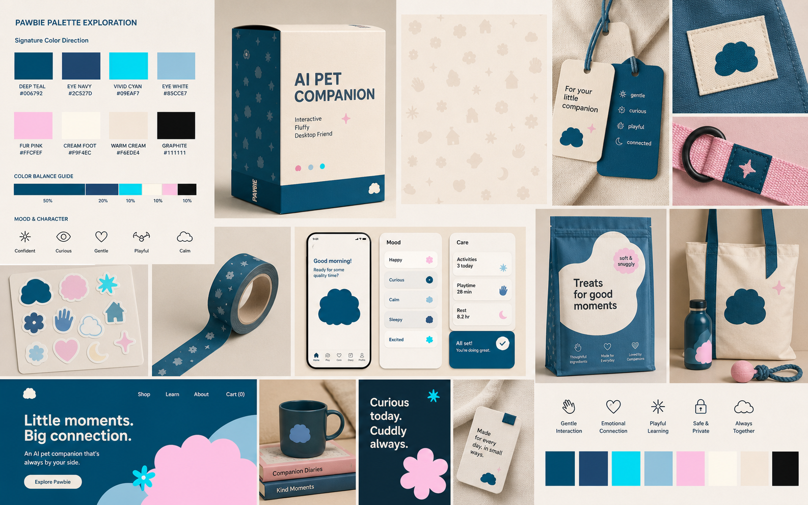
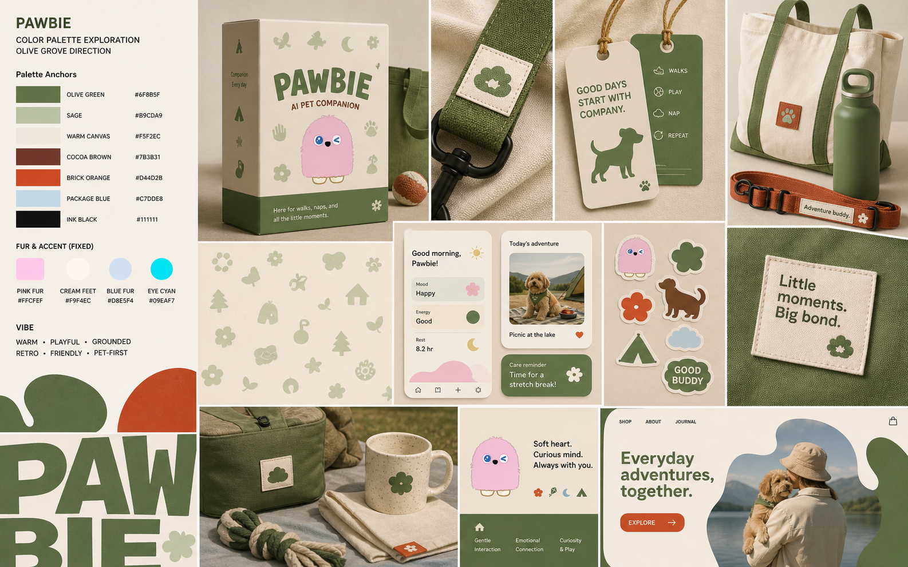
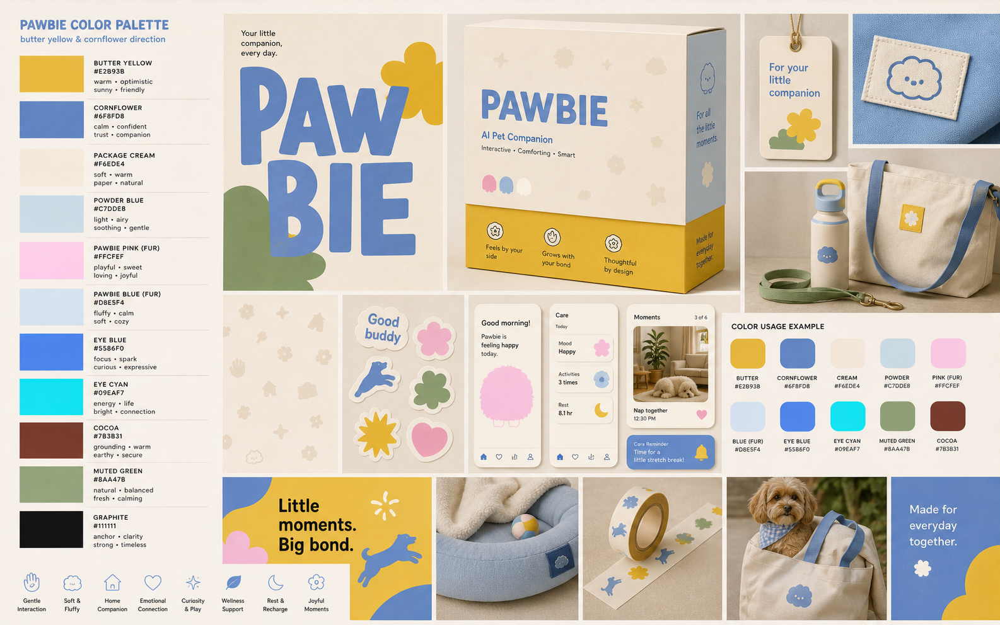

Moodboard 示意：同一套 Warm Matte token 分别落到 app、website、海报印刷、包装。此版本直接使用官方 Pawbie 2D/3D 素材，避免生图重新发明角色形象。
Updated with the latest Pawbie Warm Matte System. The goal is to separate brand expression from app usability: neutral UI foundation, controlled brand accents, richer color only in character, illustration, packaging, and campaign layers.
新的 app-facing 色彩基线从 07r 的 warm lifestyle 方向收束而来：界面先保证信息层级和平静可用性，再用小面积 tint、Pawbie 毛色、包装纸感和贴纸情绪建立品牌温度。
#FBF7F0
Shell White#FFFCF8
Warm Milk#F6EDE2
Pale Sand#EEE3D6
Line Oat#E2D6C8
Cocoa Text#4A332C
Primary Tint#A87545
Soft Tint#F1DEC9
Pawbie Pink#FFC5E6
Pawbie Cream#FCFCF7
Pawbie Blue#D8E5F4
Emotion Yellow#F2CF57

以 `softCream`、`shellWhite`、`warmMilk` 做底；`tint.primary` 只用于 selected date、progress、小 CTA。底部 tab 用 matte pill，不做饱和彩色导航。
首屏和内容模块可借用 warm paper / package feeling，但 CTA 和结构仍用 cocoa text 与 kraft tint，避免变成纯包装页。
可放大 Pawbie 毛色、贴纸形状和低对比图案；标题和信息层级仍用 `#4A332C`，红色只保留风险或极小提示。
沿用 cream base、低对比生活方式纹样、浅蓝/粉色角色 cue 与 kraft strip。包装色是品牌延展，不替代 app token。
Apple 的 app color system 不是把品牌色铺满界面，而是把颜色拆成 background、surface、tint、semantic state、content identity 和 accessibility 几层。Pawbie 应该学习这种分层：系统色负责可用性，品牌色负责识别和情绪，危险色只负责风险。
先定义系统背景，而不是先选主色。iOS 界面通常让背景承担安静的空间秩序。
像 iOS 的 grouped table 和 sheet 一样，用 surface 层级表达结构，少用重阴影和大色块。
iOS 的 tint color 通常告诉用户“这里可以操作 / 这里被选中”。Pawbie 的 tint 要小、准、可预测。
系统状态色不能被品牌情绪污染。危险色一旦变成装饰，用户就会失去对风险的敏感度。
Apple app 里品牌识别往往在内容、插画、icon、状态表达中出现，而不是把 navigation chrome 染满。
不要把浅色模式自动反相。Pawbie 的暗色模式应该像温暖夜间房间，而不是纯黑科技界面。
颜色漂亮不等于能上线。对比度、动态文字、色盲可辨识和 Reduce Transparency 都会影响最终选择。
即使参考 iOS，也不需要追 Liquid Glass 或强透明材质。Pawbie 的品牌触感来自纸面、毛绒和柔软包装。
| Apple-style role | Pawbie token | Where to use | Do not use for |
|---|---|---|---|
| System background | softCream / #FBF7F0 |
App 全局背景、tab 背后、Diary 主画布 | 卡片内部强强调、按钮填充 |
| Primary grouped surface | shellWhite / #FFFCF8 |
Settings rows、sheet、popover、dialog、menu | 无边界地铺满整页，导致层级消失 |
| Secondary emotional surface | warmMilk / #F6EDE2 |
Home hero、empty state、onboarding、widget 背景 | 密集文本区域和长列表底色 |
| Control base / selected background | paleSand / tint.soft |
Segmented control、selected tab pill、chip、pressed state | 表达危险、错误或不可逆状态 |
| App tint | tint.primary / #A87545 |
active value、progress、selected date、小面积 CTA | 大面积 nav bar、整页背景、所有 icon 默认色 |
| Label colors | text.primary / text.secondary |
标题、正文、metadata、inactive icon、chevron | 使用纯黑或低对比毛色承载正文 |
| Semantic destructive | danger.signal / #D94A35 |
Remove Pawbie、error title/icon、失败更新、确认删除 | 普通提示、品牌装饰、营销强调 |
| Brand identity | pawbie.pink / cream / blue |
Pawbie 本体、头像、设备卡、mood sticker、包装视觉 | 系统 tint、tab selected、长文本、危险状态 |
Pawbie Warm Matte System is now the latest baseline. 07r Maillard Reduced Red remains the historical route that led here, but app screens now use the refined token set above: softer foundation, warmer primary text, smaller interaction tint, and clearer danger red.
Use about 70% warm neutral UI base, 20% text/structure/small tint, 5–15% Pawbie identity colors, and only tiny semantic signals. Brand colors should support recognition without becoming the whole interface.
The app key color should not default to any fur color. Pawbie has pink, cream, and blue product variants, so interaction color sits outside the fur trio: `#A87545` for small active states and `#4A332C` for readable structure.

Bright and expressive, but the color area is deliberately small. Best used for launch energy, badges, tiny UI highlights, and social moments rather than core app surfaces.

A grown-up, tactile lifestyle direction. Cream, kraft, cocoa, and clay can carry packaging and editorial warmth; red should stay as a tiny signal only.

This is the clearest answer to “how do we use many colors in app/web?” The UI shell stays neutral; Clay/Graphite act as the system key, while fur colors and brighter accents live in illustrations, stickers, badges, icon modules, and campaign strips.

Closest to the current packaging system, but matured with graphite, kraft, and stronger structure. Package Blue stays a packaging cue; Kraft/Graphite should carry the app key role so all three Pawbie colors feel equal.

Current packaging keeps the soft cream base, pink 2D Pawbie, pale cyan information band, and low-contrast world-building motifs. This strengthens the case that App key color should sit outside the three fur colors: graphite/kraft/clay for interface structure, fur colors for product identity.
Open source image
Warm off-white canvas, black anchor typography, retro periwinkle, lavender, and brick orange.
Open Baggu website
Pet-lifestyle collage, oversized type, warm ground, walk blue, cocoa red, green, and campaign yellow.
Open Wild One website
Useful for graphic/sticker Pawbie: fur pink, eyelid pink, strong blue eye, cream feet.
Open source image
The eye gradient is a major clue: deep teal, navy, cyan, and soft blue can become an intelligence/life signal.
Open source image
Closest to current packaging and logo softness. Concern: can drift into baby cotton-brand territory; mature it with graphite, stronger type, and earthy accents.

Mature pet-lifestyle blue. Strong candidate for a Pawbie signature color.

Most Baggu-like and editorial. Stylish, but may pull away from current Pawbie softness.

Illustration color feels comfortable. In Web/App, keep the full palette inside illustrations, stickers, modules, and pattern moments; UI chrome should stay restrained.

Uses real eye gradient as the brand life/intelligence signal. More distinctive than soft blue.

Non-blue core direction. Good for pet/life/diary adjacency, calmer and more grown-up.

Warm Maillard-like direction. Keep red/cocoa area smaller: mostly labels, strips, typography, and package structure rather than full backgrounds.

Retro and sophisticated. Harmonizes with pink without becoming candy-like.

Bright and useful, but colorful areas should be smaller. Good for campaign accents, launch banners, badges, and social rather than core App surfaces.

Most design-object direction and strongest core candidate. Lets the eye gradient and fur colors become emotional accents, not the whole brand.